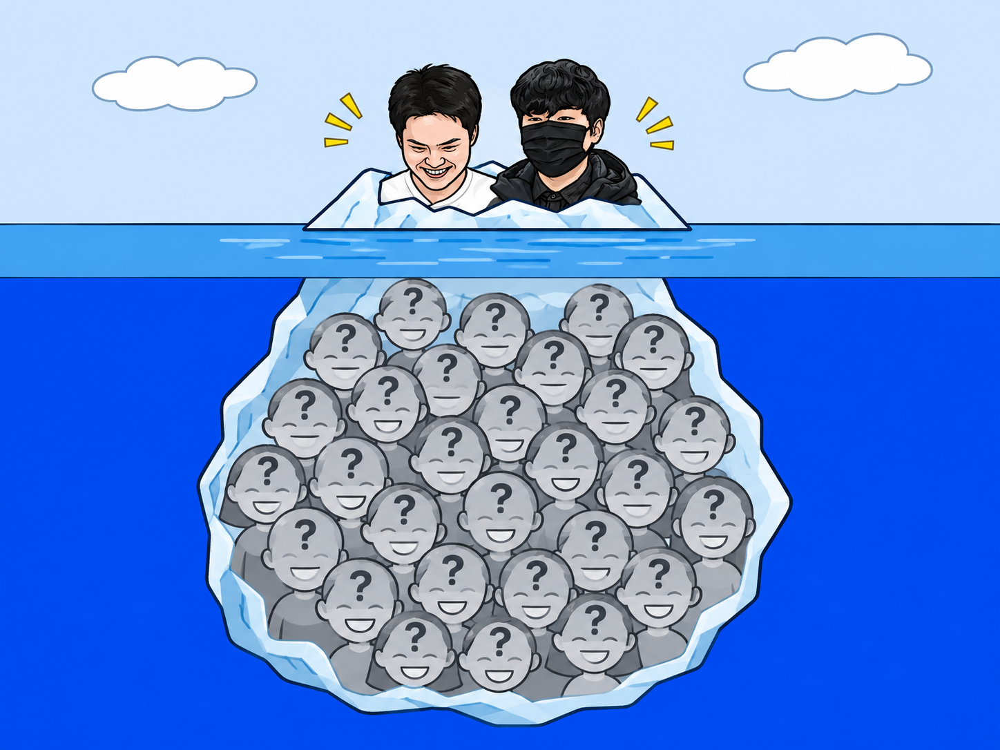

세무냥이, 리트냥이는 관종으로 수석하고 인터뷰도 자발적으로 나오면서 스스로 똥볼차다가 걸린 케이스임.
진짜 아무도 모르게 AI로 부정행위해서 합격한 사람들이 수두룩할 거 생각하면 피가 거꾸로 솟는다.

세무냥이, 리트냥이는 관종으로 수석하고 인터뷰도 자발적으로 나오면서 스스로 똥볼차다가 걸린 케이스임.
진짜 아무도 모르게 AI로 부정행위해서 합격한 사람들이 수두룩할 거 생각하면 피가 거꾸로 솟는다.
이거 ㄹㅇ임 ㅋㅋ
맘 먹고 초소형 카메라 인공지능 안경 등등 파는 사이트 싹 다 구입내역 찾아서 조지면 찾을 수 있지 않을까하는 생각을 해봄. 아깝게 불합격한 사람들 진짜 억울하잖아
전수조사 싹 했으면 좋겠다
통관내역 뒤지는 방법도 있고 open ai는 채팅 다 들여다 보고 있어서 테러범이나 성범죄자는 경찰에 신고하긴 함 ㅋㅋ
합격선만 넘으면 되는데 그선을 넘은 애들만 대표로 걸렸지 진짜 많을듯 최근 시험들 아슬아슬하게 떨어진 사람들 진짜 정신병안오면 다행이다
고위층이 부정한 방법 걸려서 의사면허 뺏긴 실제 사례 보면 이런 리스크 있는 치팅 말고 고급진 수법 쓰실듯